The design, construction and control of robots and simple machines
Robotics Projects
Basic tasks using gears: at the very beginning, I followed instructions to build simple practice contraptions using gears. I used a large range of different gears, including the most basic ones, bevel gears, and worm gears. These have different functions and allowed me to familiarise with the many possibilities that can be created using simple pieces.
Building a tower: the first project that I created after completing basic tasks/practicing was a tower. During this project, stability was emphasised and after following the instructions, I had to design something above what I had already built. To make it stable, many of factors had to be considered, such as triangular designs and symmetry.
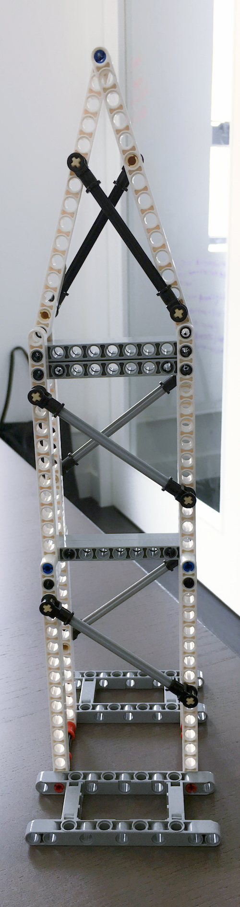
The tower
Building a windmill using gears: to make pieces spin in a windmill, I had to rely on the use of gears. Using a combination of axles and gears (including bevel gears) can transfer the motion from the motor to the actual pieces that make up the windmill.
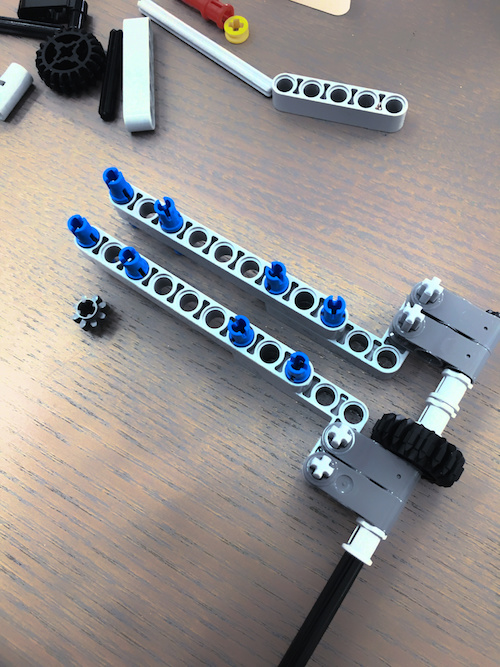
Building in process
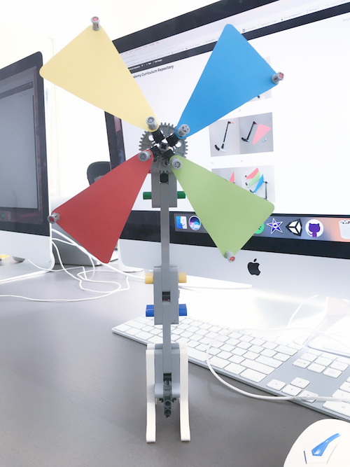
Finished windmill
Building a vehicle: the third creation that I did was a vehicle. The instructions were straightforward and allowed me to understand the use of axles, rods, gears and other pieces, preparing me to design a completely new robot afterwards. This vehicle consisted of two large motors to control its movement, a small motor, and the other sensors available. Through this project I also learnt how to code and control the brick of the robot, which then allowed me to create my own commands and make the robot move according to a path I created.
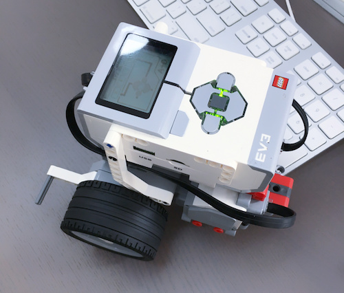
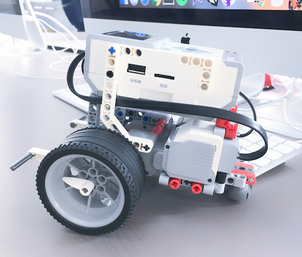
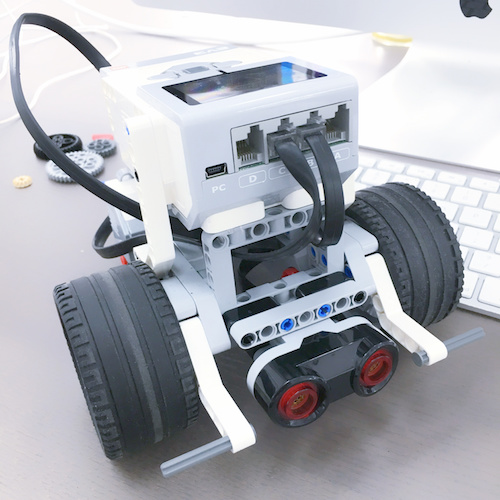
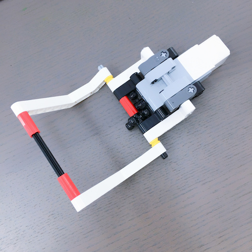
Photos of the vehicle
Designing my own vehicle: this was the most challenging project amongst all the others as I had to create a robot using the knowledge I have acquired from the previous projects without any guidance. I created a second vehicle that I designed, using the previous projects for inspiration. This vehicle has two wheels, which I placed a lot further apart than the vehicle I built before, allowing it to be more stable. It also has a color sensor at the front as well as a container which can be used to transport items to different places through the use of the robot. This project was created using many pegs and axles to place the different parts together. The weight of the back and the front of the vehicle also had to be considered, as my vehicle toppled over quite a few times due to unbalanced weights.
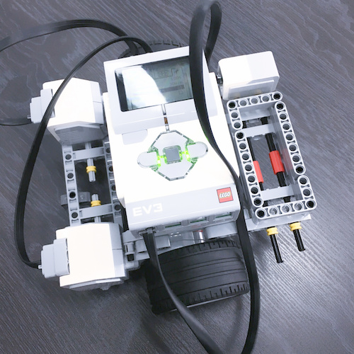
A photo of my designed vehicle
An egg decorator: this robot moves a pen automatically through the use of gears and motors. It also spins the egg, allowing the pen to draw on it and create patterns. The patterns drawn on the egg can be designed using the commands on the computer.
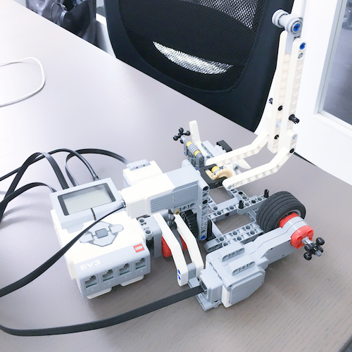
The Basic Important Pieces
Gears: gears are wheels with teeth, allowing them to transfer motion. When a gear is connected to another and when the first gear gains energy to move (usually through the use of a motor), the second gear will move as well in the opposite directon. Gears of different sizes can also do this. There are many different types of gears: normal gears work side by side, but bevel gears only have teeth on one side and can only work when they are placed perpendicular to each other. There are also double bevel gears, which work both side by side and when placed perpendicular to other gears. Gears come in different sizes and are measured by the number of teeth they have.
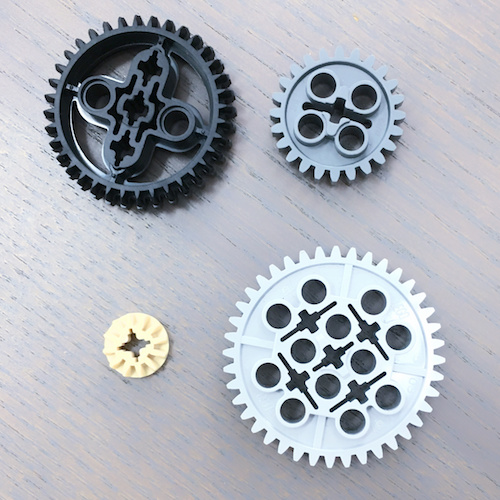
Different types of gears. In the order of top left, top right, bottom left, bottom right: double bevel gear, noraml gear (smaller), bevel gear, normal gear (bigger)
Rods: rods are the main pieces that make up the structure of the final project. They come in different lengths with different numbers of holes, allowing them to connect to other pieces through the use of pegs.
Pegs: pegs are very important because they connect two or more rods together. There are also a large variety of pegs available. The most commonly used pegs connect two rods together and have a bumpy surface, so the rods being connected do not rotate easily and are more stiff. However pegs with a smoother surface allow rods to spin smoothly and should be used if this is desired. There are also 2:1 pegs which can connect three rods together.
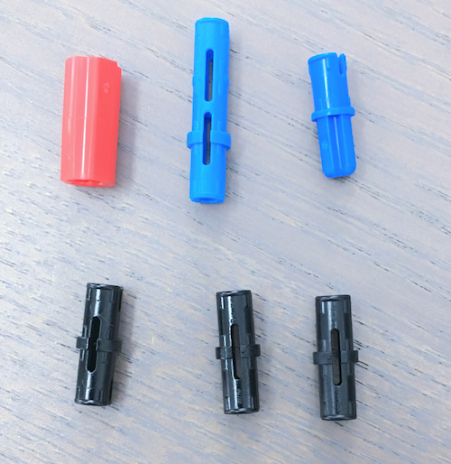
Different types of pegs
Axles: the cross section of axles have a shape of an "x". When axles are placed inside the "x" shaped holes in rods, they are fixed in position and cannot rotate at all. Axles can connect gears and rods together, but they also work with other pieces to form a stable structure.
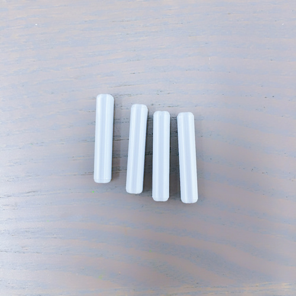
Size 3 axles
Brick: the brick is the most important component of the robot. It is the device that controls the robot. Coding can be done within the brick itself, but the device can also receive commands from a phone through Bluetooth.
Large and small motors: motors convert electircal energy to motion. They are used to spin axles, wheels, gears, etc. Large motors are usually used to control the main movements of the robot, such as the movement of wheels. Small motors are usually used to control smaller movements, like moving an arm or a crane.
Part of the robot controlled by the small motor
Sensors: there are multiple types of sensors that can be added to the robot. The color sensor can detect specific colors, and can be used to make the robot carry out certain actions when a certain color is in front of it. There is also a infrared wave sensor, which senses objects or obstacles within a certain distance. The touch sensor can be used to make the robot carry out actions when the user touches a button on the sensor. Finally, to make the robot turn at specific angles, the rotation sensor can be used.
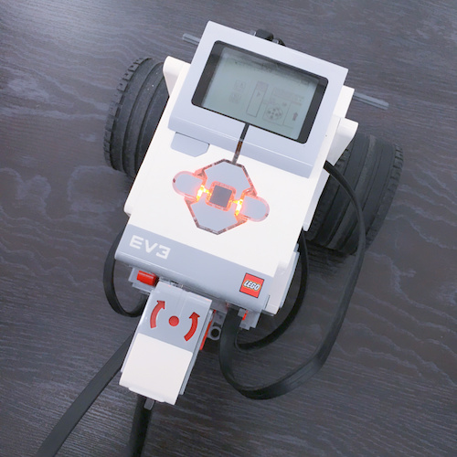
The rotation sensor
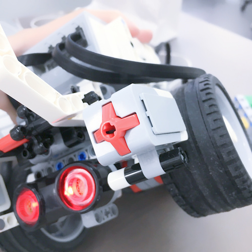
The touch sensor
This sensor detects things in front of it. In this video the vehicle stops when it detects the object
Building a Stable Structure
Using pegs/axles: when rods are connected together using one peg, they are not very stable because they can move and rotate. When two or more pegs are used to connect rods, then they will be fixed in place and will not be able to move. The further away these pegs, the more stably held the two rods will be. Axles can also make things stable because they put pieces in fixed positions.
Triangles: out of the many shapes that can be made using pieces, triangles are the most stable. When a square/quadrilateral is made, the pieces can move and the shape will change. For example, building a simple rectangle using four rods and pegs is not stable because it can shift and become a different shape, like a parallelogram. However if a triangle is built, it is fixed and the shape will not be able to shift at all, therefore it is not possible for a triangle to collapse. This is why most structures are mainly made of triangles, eg. the Eiffel Tower and many bridge designs.
Making rectangles stable: one way to make a rectangular shaped structure more stable is to add a piece (such as an axle) going diagonally across the shape. This makes the sides stay in their positions. Another way to make a rectangle stable is to make a fixed corner, for example using "L"-shaped pieces. This will hold the other corners in place as well.
A wide base: having a wider base usually makes a structure more stable. For example if the wheels of a vehicle are placed further apart, the vehicle will be more stable.
Symmetry: many structures are designed to be symmetrical. This is because it increases stability as well.
This tower contains triangles, a wide base, and pieces that are built across the rods.
Controlling the Robot
There are three different ways to control the motors and sensors of a robot.
1. Coding inside the brick
Inside the brick there are commands that can control the robot. The user can input a series of commands, then press play to allow the robot to run the code. To add a new command, move the "cursor" (the dotted line) to the part where you want to add it, then press the up button. This brings up a menu containing the different commands that can be used. One of the basic commands is to make the robot move. The brick does this by controlling the large motors, often attached to the robot's main wheels. When both large motors are rotating in a certain direction, the robot will move in that direction. When only one of the large motors is rotating, the robot will turn. When the large motor command is selected, a direction can be selected (eg. forwards, backwards, turn left, turn right). Afterwards, the user will need to add a timer command, which specifies how long this action will carry on for. When using the turning commands, the time that the robot turns for will affect the angle it rotates by.
There are many commands available in the brick of the robot. The small motors can be controlled as well as the sensors. When a sensor command is selected, the user can choose what happens after the sensor senses a certain thing. For example, the robot can be coded to move forwards, but stop when a blue object is sensed (by the color sensor).
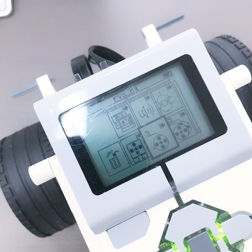
Some of the commands available in the brick
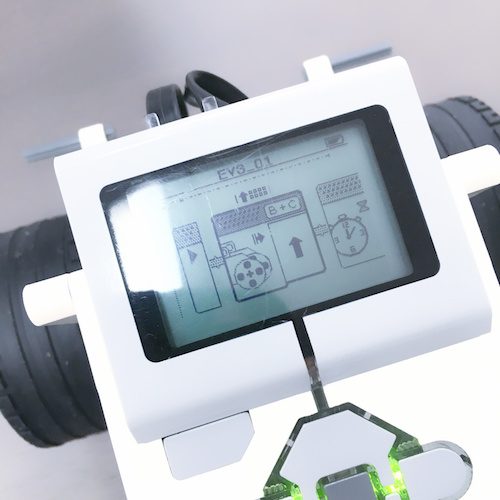
A mini program consisting of different commands
Controlling the robot this way is easy, and it also allows you to control the sensors. One of the drawbacks of controlling it this way is that there are limited times, directions, etc. which are related to the details of its movement.
2. Controlling inside the phone
A simpler way to control the robot is to connect it to a phone through bluetooth. The mindstorms app must be installed on the phone. When this app is opened, the user can choose how they want to control the robot. They can add buttons, sliders, etc. to control the motors. The most useful option is the joystick which controls the robot's overall movement.
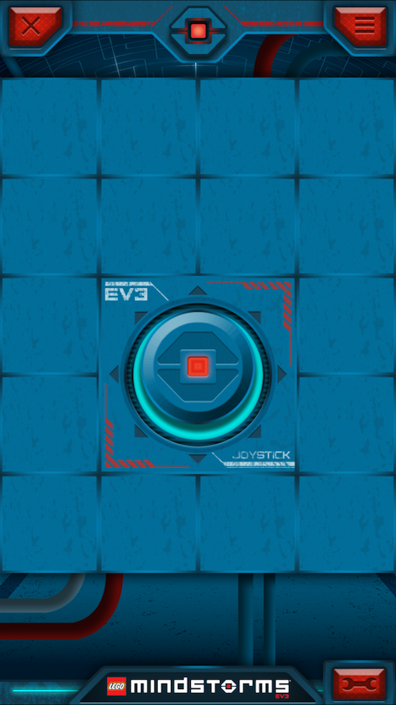
The interface of the application on the phone
The vehicle being controlled by the phone application.
This way of controlling the robot takes more practice because the joystick is quite challenging to control. However it gives a lot more flexibility in terms of the times and angles, a feature that the brick lacks.
3. Coding in the computer software
This way of controlling the robot is more precise because it lets a user input angles or times that are more accurate than the previous options. It also provides an option to loop parts of the code. All the commands are in blocks and the software is easy to use.
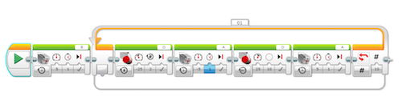
The software on the computer
About the Author
Hello, my name is Michelle and this website is about the robotics course at BSD Academy, Hong Kong. My family has encouraged me to try different coding activities, and thus I enrolled in this class.
Throughout the course I have learnt about the different pieces, especially the gears, which are essential in robotics. I have then built different structures and simple robots using motors, sensors and the pieces. By the end of the course I was able to design my own robot by taking inspiration from previous creations and adding on my own ideas.